Temas embutidos
Gerado a partir de themes/*.kdl. Todo tema tem modo claro e escuro, e as opções abaixo aparecem em Configurações → Aparência.
Os temas feitos por outras pessoas estão na galeria da comunidade, e Compartilhar seu tema explica como mandar o seu.
classico
O layout familiar, nas cores do seu wallpaper, com banner do servidor.
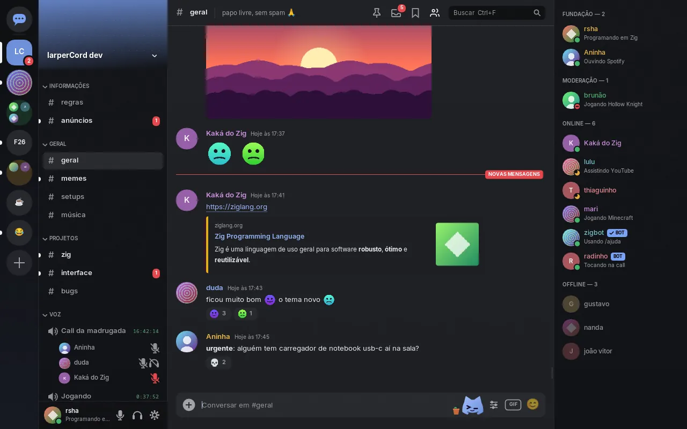
| Opção | Padrão | O que faz |
|---|---|---|
Banner do servidor (banner) | ligada | Faixa colorida com o nome do servidor no topo dos canais. |
Textura sutil (textura) | ligada | Um grão bem fino nas superfícies, que tira o ar de cor chapada. |
Abas de canal (abas) | desligada | Mostra os canais abertos em abas acima da conversa. |
Efeito CRT (crt) | desligada | Scanlines discretas por cima de tudo. |
Fonte: classico.kdl · abrir no criador de temas
vidro
Cartões de vidro sobre o wallpaper, com reflexo. No Linux, o compositor desfoca o que está atrás.
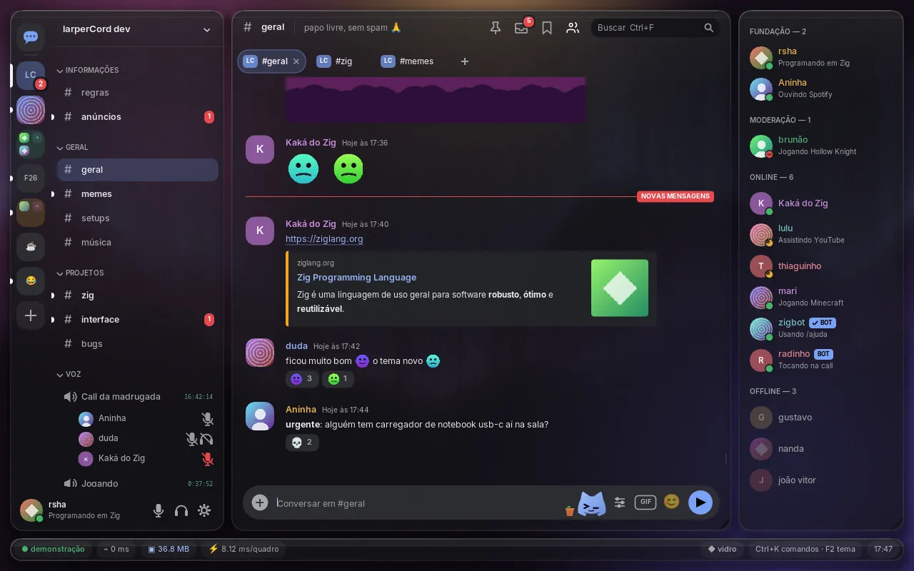
| Opção | Padrão | O que faz |
|---|---|---|
Reflexo nos cartões (brilho) | ligada | Uma faixa de luz no topo de cada cartão, como vidro de verdade. |
Aurora ao fundo (aurora) | ligada | Uma cortina de luz nas cores do tema atrás dos cartões. Parada: gerada uma vez. |
Abas de canal (abas) | ligada | Mostra os canais abertos em abas acima da conversa. |
Banner do servidor (banner) | desligada | Faixa com o nome do servidor no topo dos canais. |
Fundo opaco (opaco) | desligada | Sem transparência: os cartões ficam sólidos (mais leve). O melhor visual no Windows, que não tem blur. |
Efeito CRT (crt) | desligada | Scanlines discretas por cima do vidro. |
Fonte: vidro.kdl · abrir no criador de temas
terminal
tmux + IRC: monoespaçado, canais em árvore, efeito CRT e logo em ASCII.
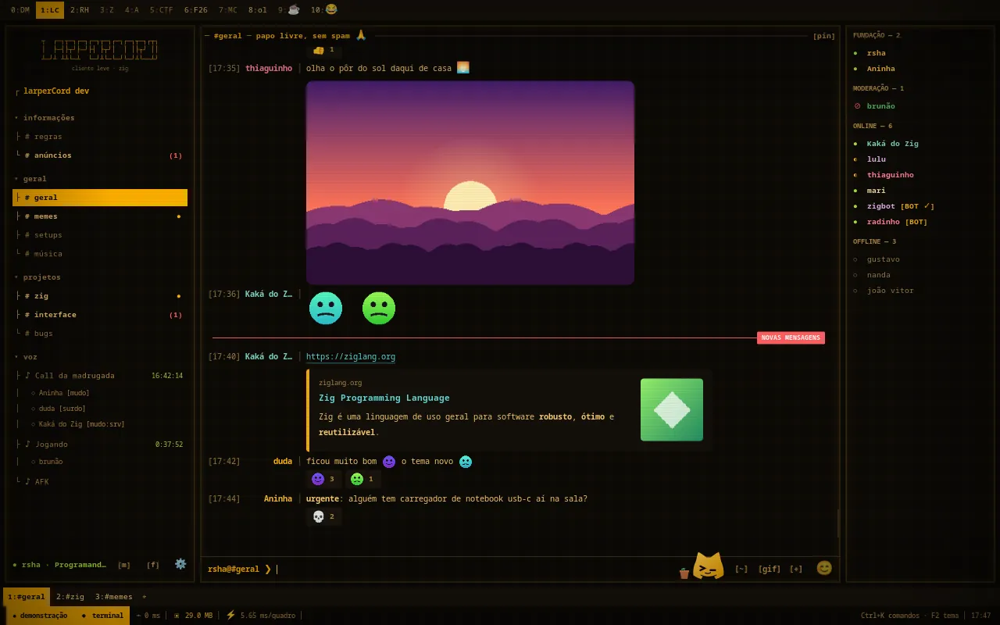
| Opção | Padrão | O que faz |
|---|---|---|
Efeito CRT (crt) | ligada | Linhas de varredura e cantos escuros, como um monitor antigo. |
Logo em ASCII (ascii) | ligada | O nome do app desenhado com caracteres no topo dos canais. |
Fósforo verde (verde) | desligada | Troca o âmbar pelo verde dos terminais clássicos (modo escuro). |
Retícula (reticula) | ligada | A grade fina de osciloscópio atrás do texto. |
Radar ao fundo (radar) | desligada | Um radar de fósforo, parado, atrás das janelas. |
Mapa topográfico (mapa) | desligada | Curvas de nível atrás das janelas. |
Abas de canal (abas) | ligada | Mostra os canais abertos em abas no rodapé. |
Fonte: terminal.kdl · abrir no criador de temas
subsolo
Terminal de subsolo: preto fóssil, fósforo ácido, ultravioleta e scanlines.
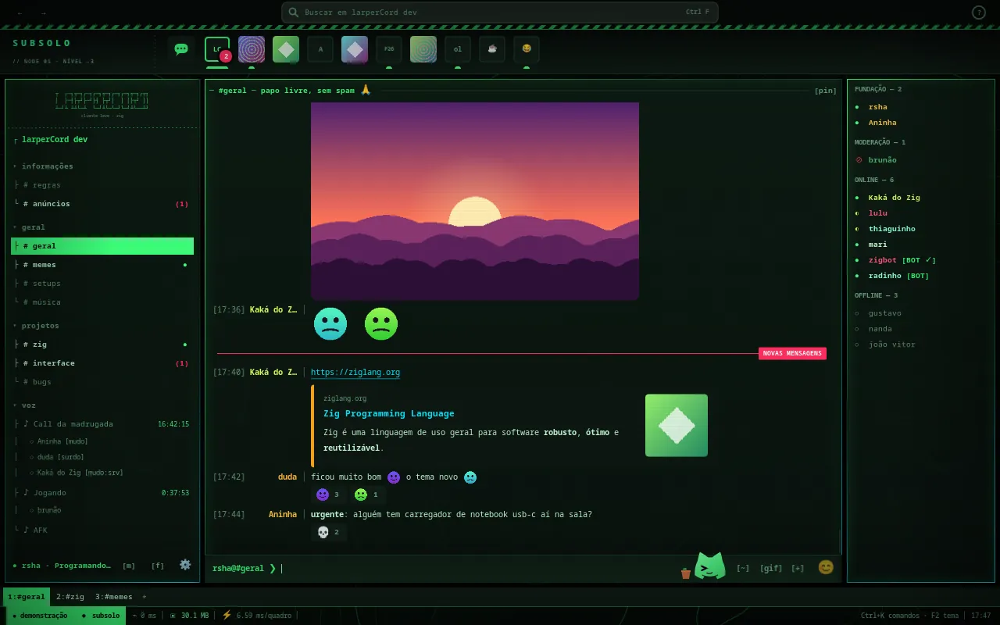
| Opção | Padrão | O que faz |
|---|---|---|
Mapa dos túneis (tuneis) | ligada | Curvas de nível em fósforo atrás dos painéis, paradas. |
Scanlines (crt) | ligada | Linhas de varredura e vinheta, como um monitor de tubo. |
Ultravioleta (roxo) | desligada | Troca o verde ácido pelo roxo neon (deep web). |
Logo em ASCII (ascii) | ligada | O nome do app desenhado no topo da lista de canais. |
Barra superior (topo) | ligada | Voltar/avançar, busca e ajuda no topo. |
Abas de canal (abas) | ligada | Mostra os canais abertos em abas no rodapé. |
Fonte: subsolo.kdl · abrir no criador de temas
orbital
Console de bordo: grafite, menta, numeração de sistemas e servidores no rodapé.
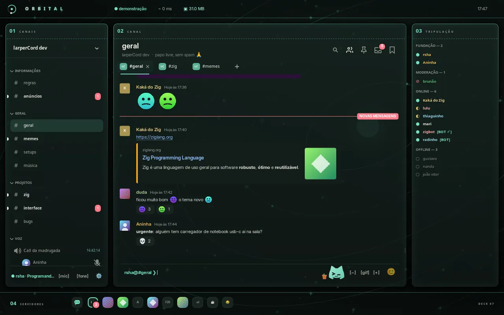
| Opção | Padrão | O que faz |
|---|---|---|
Campo de estrelas (estrelas) | ligada | Estrelas paradas atrás dos painéis (geradas uma vez, não gastam nada). |
Sistema de órbitas (orbitas) | ligada | O diagrama de órbitas ao fundo. |
Fundo em movimento (movimento) | desligada | Estrelas e luas andam bem devagar, a 10 quadros por segundo. Desliga sozinho com "Reduzir movimento" e com a janela em segundo plano. |
Telemetria no topo (telemetria) | ligada | Conexão, ping, RAM e relógio na barra superior. |
Abas de canal (abas) | ligada | Canais abertos em abas acima da conversa. |
Barra de busca (topo) | desligada | Mostra a barra de busca e ajuda abaixo do wordmark (Ctrl+K continua funcionando). |
Scanlines do console (crt) | desligada | Um leve efeito de tela de nave por cima de tudo. |
Fonte: orbital.kdl · abrir no criador de temas
editorial
Revista impressa: masthead em serifa, conversa em coluna central e índice à direita.
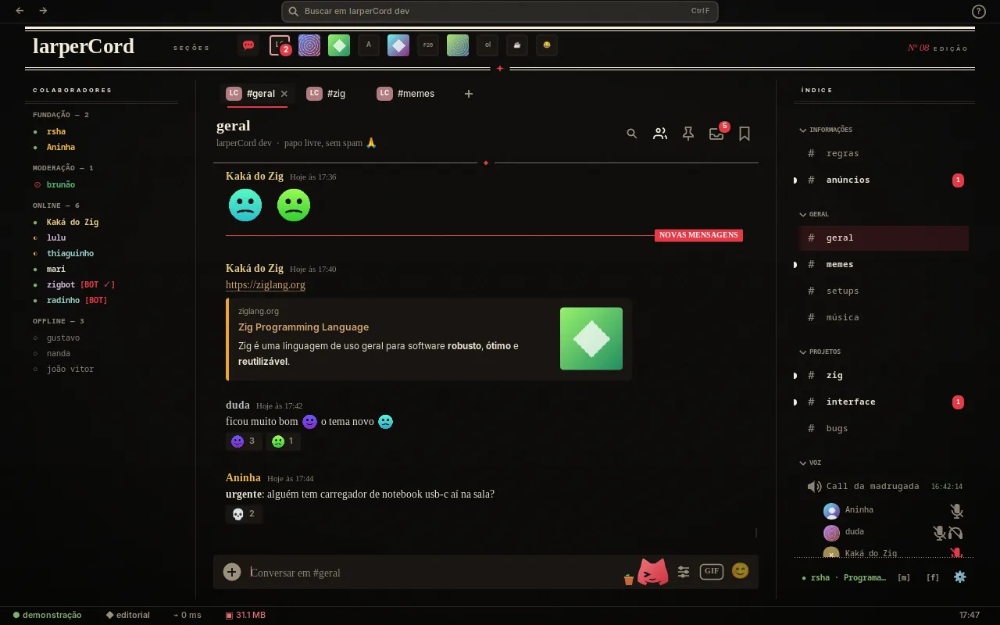
| Opção | Padrão | O que faz |
|---|---|---|
Masthead (manchete) | ligada | O cabeçalho grande com o nome da revista e os servidores. |
Abas de canal (abas) | ligada | Canais abertos como um sumário acima da conversa. |
Colofão (status) | ligada | Conexão, tema, ping e relógio no pé da página. |
Fonte: editorial.kdl · abrir no criador de temas
bolhas
Mensageiro: balões de conversa, "Entregue ✓✓" e balão de digitando.
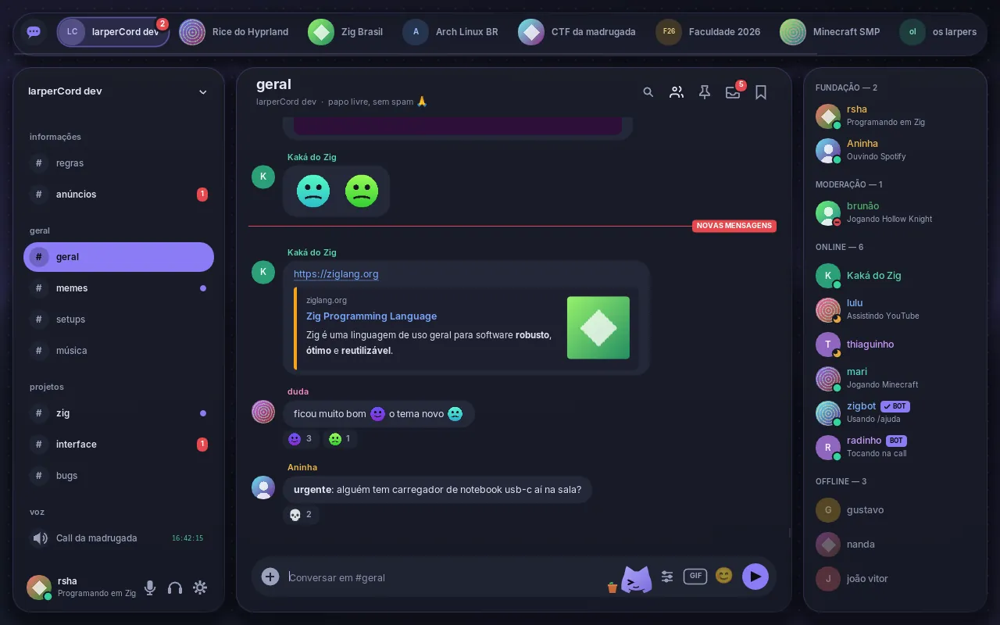
| Opção | Padrão | O que faz |
|---|---|---|
Fundo colorido (fundo) | ligada | Pontinhos e uma luz suave atrás dos cartões. |
Confirmação de entrega (entregue) | ligada | Mostra "Entregue ✓✓" embaixo da sua última mensagem. |
Balão de digitando (digitando) | ligada | Os três pontinhos aparecem como um balão na conversa. |
Nomes dos servidores (nomes) | ligada | Mostra o nome ao lado do ícone na barra de cima. |
Abas de canal (abas) | desligada | Mostra os canais abertos em abas dentro do cartão da conversa. |
Fonte: bolhas.kdl · abrir no criador de temas
zen
Foco: coluna central, letras maiores e a navegação que se esconde sozinha.
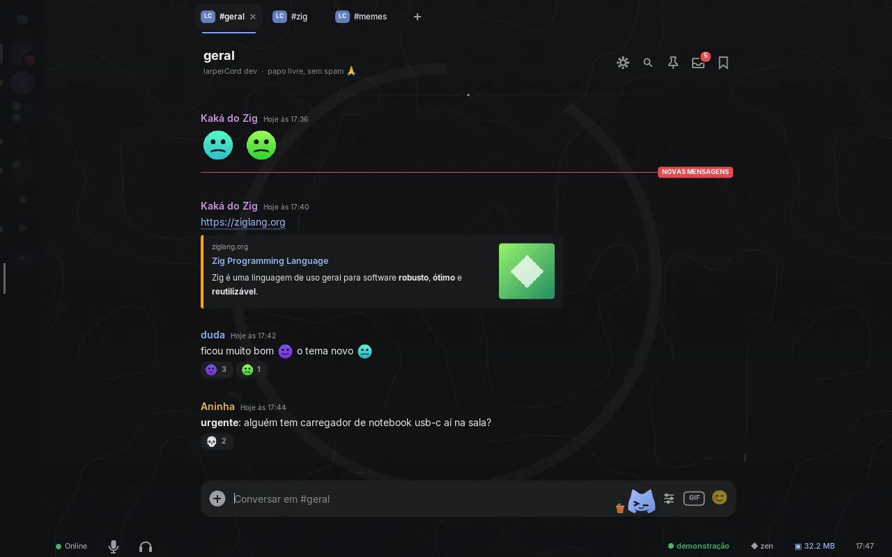
| Opção | Padrão | O que faz |
|---|---|---|
Jardim de areia (jardim) | ligada | Curvas rasteladas e um enso bem discretos atrás da conversa, parados. |
Esconder os servidores (esconder) | ligada | A faixa da esquerda some até o mouse chegar perto. |
Abas de canal (abas) | ligada | Os canais abertos em abas acima da conversa. |
Rodapé (status) | ligada | Seu status, microfone e fone, conexão, tema, RAM e relógio, bem discretos embaixo. |
Avatares (avatares) | desligada | Mostra as fotos ao lado das mensagens. |
Fonte: zen.kdl · abrir no criador de temas
papel
Caderno: folha pautada com margem vermelha, títulos em serifa e índice.
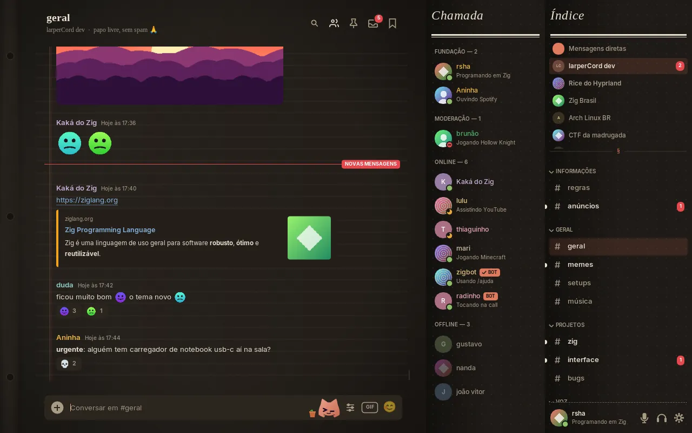
| Opção | Padrão | O que faz |
|---|---|---|
Furos de fichário (furos) | ligada | Os três furos na beirada da folha. |
Folha pautada (pautado) | ligada | Linhas de caderno atrás da conversa. |
Margem vermelha (margem) | ligada | A linha dupla da margem, como num caderno escolar. |
Índice (indice) | ligada | O título "Índice" no topo da margem direita. |
Abas de canal (abas) | desligada | Mostra os canais abertos em abas acima da conversa. |
Fonte: papel.kdl · abrir no criador de temas
escritorio
Ferramenta de trabalho: barra superior com busca, servidores em lista.
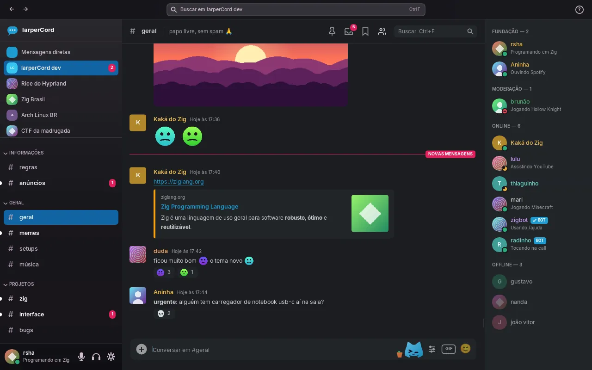
| Opção | Padrão | O que faz |
|---|---|---|
Barra superior (topo) | ligada | Voltar/avançar entre abas, busca no servidor e ajuda. |
Lista de servidores (servidores) | ligada | Os servidores no topo da barra lateral. |
Abas de canal (abas) | desligada | Mostra os canais abertos em abas acima da conversa. |
Barra de status (status) | desligada | Conexão, ping, RAM e relógio no rodapé. |
Fonte: escritorio.kdl · abrir no criador de temas
cupertino
Mesa de trabalho estilo Mac: papel de parede, janela flutuante com semáforo, barra lateral translúcida e Dock com lupa.
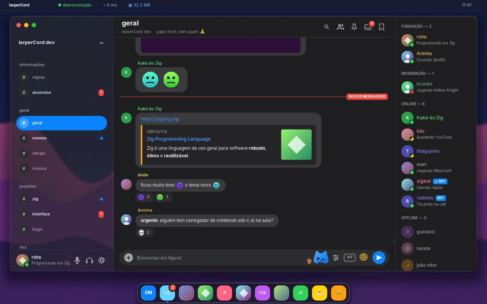
| Opção | Padrão | O que faz |
|---|---|---|
Balões (baloes) | ligada | A conversa em balões, como no app de mensagens. |
Dock (dock) | ligada | Os servidores no Dock, com lupa. Desligado, ficam na barra lateral. |
Papel de parede em movimento (movimento) | desligada | As colinas deslizam bem devagar, a 10 quadros por segundo. Desliga sozinho com "Reduzir movimento" e com a janela em segundo plano. |
Abas de canal (abas) | desligada | Os canais abertos em abas acima da conversa. |
Transparência de verdade (transparente) | desligada | Tira o papel de parede: o seu aparece atrás da janela, desfocado pelo compositor no Linux. |
Fonte: cupertino.kdl · abrir no criador de temas